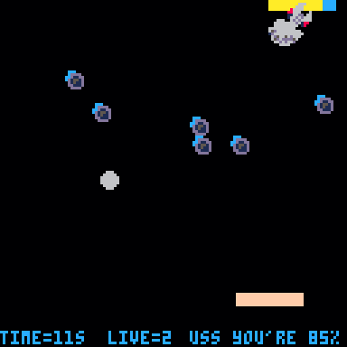

Wer sich gerne einmal mit Retro-Spieleprogrammierung (GameDev) beschäftigen will, dem aber C64, GB und NES Tools zu kompliziert sind, sollte sich unbedingt einmal PICO-8 ansehen. Diese “virtuelle Konsole” mit einer integrierten Entwicklungsumgebung, bietet alles was man zur Spieleprogrammierung benötigt. Dabei läuft sie nicht nur auf dem PC, sondern auch auf dem Raspberry Pi.
Grundsätzliches
PICO-8 ist eine erfundene „Fantasy Console“ die am PC (Windows, Linux, MacOS) und auf dem Raspberry Pi emuliert werden kann. Es handelt sich um ein kommerzielles Produkt, das von Lexaloffle Games entwickelt wird. Die Programmierung erfolgt in Lua. Mithilfe der integrierten Entwicklungsumgebung können Source, Musik, Sound, Sprites und Maps erstellen werden.
Der reguläre Preis beträgt 14,99 US Dollar (ca. 14 Euro). Bei einem Game-Jam bzw. im Schulungsbereich kann es gratis benutzt werden. Nach der Schulung können die Teilnehmer vergünstigt eine “Take-home license” erwerben.
Installation
PICO-8 läuft auch auf einem Raspberry Pi Zero (1000 MHz), wobei hier schon die Grenze erreicht ist. Es hängt auch etwas von den Spielen ab, aber die von mir getesteten liefen knapp unter 100% CPU-Last. Als Basis wurde eine Raspbian Bullseye mit installierter WiringPi Library verwendet.
Nach dem Kauf kann man sich die Zip-Datei “pico-8_0.2.5g_raspi.zip” herunterladen und mit unzip *.zip entpacken. Das Verzeichnis “pico-8” enthält ab Version 2 vier ausführbare Dateien “pico8”, “pico8_dyn”, “pico8_gpio” und “pico8_64”.
Bei “pico8” wurde die SDL2 Library in Version 2 statisch gelinkt. Bei “pico8_dyn”, wird die SDL2 Library in Version 2 dynamisch gelinkt. Das bedeutet also, sie muss am System vorhanden sein.
Damit sie verfügbar ist muss man nur das entsprechende Paket installieren.
sudo apt-get install libsdl2-dev
Im Test konnte Pico 8 in der Konsole nicht mit dem Legacy Treiber (non-GL) betrieben werden (obwohl es in der README-Datei empfohlen wird). Man sollte deshalb den OpenGL Driver verwenden.
sudo raspi-config
6 Advanced Options Configure advanced settings
A2 GL Driver Enable/disable experimental desktop GL driver
G1 Legacy Original non-GL desktop driver
-> G2 GL (Full KMS) OpenGL desktop driver with full KMS
In der Konfigurationsdatei könnte man den Treiber dann noch von “vc4-kms-v3d” auf “vc4-fkms-v3d” ändern. Es ist nicht zwingend erforderlich, andere Programmen laufen aber nur mit dem fkms Treiber.
sudo nano /boto/config
# Enable DRM VC4 V3D driver
dtoverlay=vc4-fkms-v3d
Leider gibt es die Version mit GPIO Support nur in der statischen Version und diese lässt sich im aktuellen Raspberry Pi OS nicht starten. Gleiches gilt im übrigen auch für die “./pico8” Version. Es wird immer folgender Fehler angezeigt:
SDL Error: Could not initialize EGL
** FATAL ERROR: Unable to create window
Segmentation fault"
Früher bei Version 0.1, als noch die SDL Library in Version 1 verwendet wurde, hat es noch funktioniert. PICO-8 0.1 funktioniert aber auch auf der neuen Raspberry Pi OS Bullseye Version, allerdings sind viele Spiele für die aktuelle Version programmiert und lassen sich deshlab nicht starten.
Lauffähige Versionen PICO-8 (GPIO Support):
| Version | MD5 Checksumme | Datei |
|---|---|---|
| 0.1.12c2 | 0fbbcb9d88f48d5f67b68a39412c962c | pico8 |
Lauffähige Versionen PICO-8 (ohne GPIO Support):
| Version | MD5 Checksumme | Datei |
|---|---|---|
| 0.2.0i | 8c9ea65b849391debe0211af3fda48b3 | pico8_dyn |
| 0.2.2c | ab5c2bf26f9a5dfecbb069b65f3b1be1 | pico8_dyn |
| 0.2.4 | bc99f6c0a6a262ca9630852f19b05553 | pico8_dyn |
| 0.2.5 | 9d69d09cc7fc6e8bc15ff6fc9224c5e9 | pico8_dyn |
Technische Daten
Auflösung: 128 x 128 Pixel
Bilder pro Sekunde (FPS): 30 oder 60
Farben: 16 Farben (Palette unter CC0 freigegeben, download)
Modul (Cartridge) Größe: 32 kB
Tasten: D-PAD, 2 Aktionstasten (X und O), Menütaste
Sound: 4 Kanal, 64 definierbare Chip Sounds
Limitierungen: Sprites (128 8x8 Pixel), Maps (128x32 Zellen), Source (8192 Tokens)
Palette

Tastenzuordnung
Pause: Enter bzw. P
Steuerung Player 1:
D-PAD: Steuerkreuz
Aktionstaste 1 (O): Z bzw. N
Aktionstaste 2 (X): X bzw. M
Steuerung Player 2:
D-PAD = S D E F
Aktionstaste 1 (O): Tab bzw. Shift
Aktionstaste 2 (X): Q bzw. A
Modul (Cartridge)
Vielfach wird beim Programmspeicher von Cartridge, also von einem Spielmodul gesprochen wie man es von GB, NES usw. kennt. Bei der Cartridge handelt es sich allerdings um eine PNG-Bilddatei. Das erstellte Programm kann also in einer Grafikdatei gespeichert werden. Diese Datei enthält dann ein Vorschaubild als auch das Spiel selbst als Zusatzdaten.
Splore
Startet man das Programm mit der Parameter “-splore” wird PICO-8 mit einem Menü gestartet in dem man verschiedene Spiele herunterladen und ausprobieren kann.
Mit den seitenliche Pfeiltasten kann man auf FEATURED gehen und dann mit der Entertaste auf UPDATE. Dann wird die neueste unterstützte Spieleliste heruntergeladen. Nun kann man mit den Pfeiltasten eines auswählen und mit Enter RUN CART wählen. Die Steuerung erfolgt mit den Pfeiltasten sowie x- und y-Taste. Mit der Esc-Taste kommt man wieder in ein Menü bei dem man EXIT TO SPLORE wählen kann.
Im Menü kann man auch einzelne Spiele mit FAVOURITE in die Liste der favorisierten Spiele übernehmen, damit man sie leicht wiederfindet.
./pico8_dyn -splore

Programmierung

Sourcecode Ausschnitt als Beispiel
FUNCTION MOVEPADDLE()
IF BTN(0) THEN
IF PADX>=STEP THEN
PADX-=STEP
ELSE
PADX=0
END
ELSEIF BTN(1) THEN
IF PADX+PADW<=127-STEP THEN
PADX+=STEP
ELSE
PADX=127-PADW
END
END
END
FUNCTION _UPDATE()
MOVEENEMY()
MOVEPADDLE()
BOUNCEBALL()
BOUNCEBUMPER()
BOUNCEPADDLE()
MOVEBALL()
CHECKENEMYHIT()
END
FUNCTION _DRAW()
CLS()
FOREACH(BUMPERS, DRAW_BUMPER)
DRAW_ENEMY()
RECTFILL(PADX,PADY,PADX+PADW,PADY+PADH,15)
PRINT("TIME="..CEIL(TIME()).."S",0,122,12)
PRINT("LIVE="..LIVE,40,122,12)
PRINT("USS YOU'RE "..ENEMY_HEALTH.."%",70,122,12)
CIRCFILL(BALLX,BALLY,BALLSIZE,6)
END
Raspberry Pi
Für den Raspberry Pi enthält PICO-8 eine Besonderheit. Auf die ersten 8 GPIOs (WiringPi Nummerierung) kann direkt zugegriffen werden. Dazu wird aber “pico8” in Version 0.1 und auch noch die WiringPi Library benötigt. Die Installation ist sehr einfach, man sich das Paket aber selbst herunterladen.
wget https://github.com/WiringPi/WiringPi/releases/download/2.61-1/wiringpi-2.61-1-armhf.deb
sudo apt install ./wiringpi-2.61-1-armhf.deb
Mit dieser Version können also acht GPIOs als Eingänge gelesen oder als Ausgänge auf High oder Low gesetzt werden. Die GPIOs sind dabei auf die Adressen 0x5f80 bis 0x5f87 verfügbar. Will man den ersten GPIO auf High (3,3 V) setzen, so muss man mit dem Befehl ‘poke’ den Wert 255 auf Adresse 0x5f80 zuweisen. Der Wert 0 setzt den Ausgang auf Low (GND).
Der Befehl ‘peek’ wird zum Einlesen des Zustands des GPIOs verwendet.
Blinklicht auf zwei GPIOs:
TIMER=0
FUNCTION _UPDATE()
TIMER = TIMER+1
IF TIMER>=60 THEN
TIMER = 0
END
IF TIMER==30 THEN
POKE(0X5F80,255)
POKE(0X5F87,255)
ELSEIF TIMER==0 THEN
POKE(0X5F80,0)
POKE(0X5F87,0)
END
END
Pi-XO Spielkonsole
Der GC2 hat in einem Projekt, eine kleine Gameboy Advance ähnliche Handheld-Konsole entwickelt. Sie ist speziell für PICO-8 geeignet und nennt sich Pi-XO. Sie besteht aus einem Raspberry Pi Zero und einer Platine mit Tasten, einem SPI-Display und Soundausgabe. Mit den ersten 8 GPIOs können Vibrationsmotoren und LEDs aktiviert werden. Weitere Informationen findet man auf der GitHub Projektseite.

Verlinkungen
Pi-XO
PICO-8
Offizielles PICO-8 Handbuch
Bezug PICO-8
Vergünstigte Lizenz PICO-8 for Educators
PICO-8 Palette
Englische Handbücher für den Einstieg
Gamedev with PICO-8
PICO-8 Fanzine #1
PICO-8 Fanzine #2
PICO-8 Fanzine #3
PICO-8 Fanzine #4